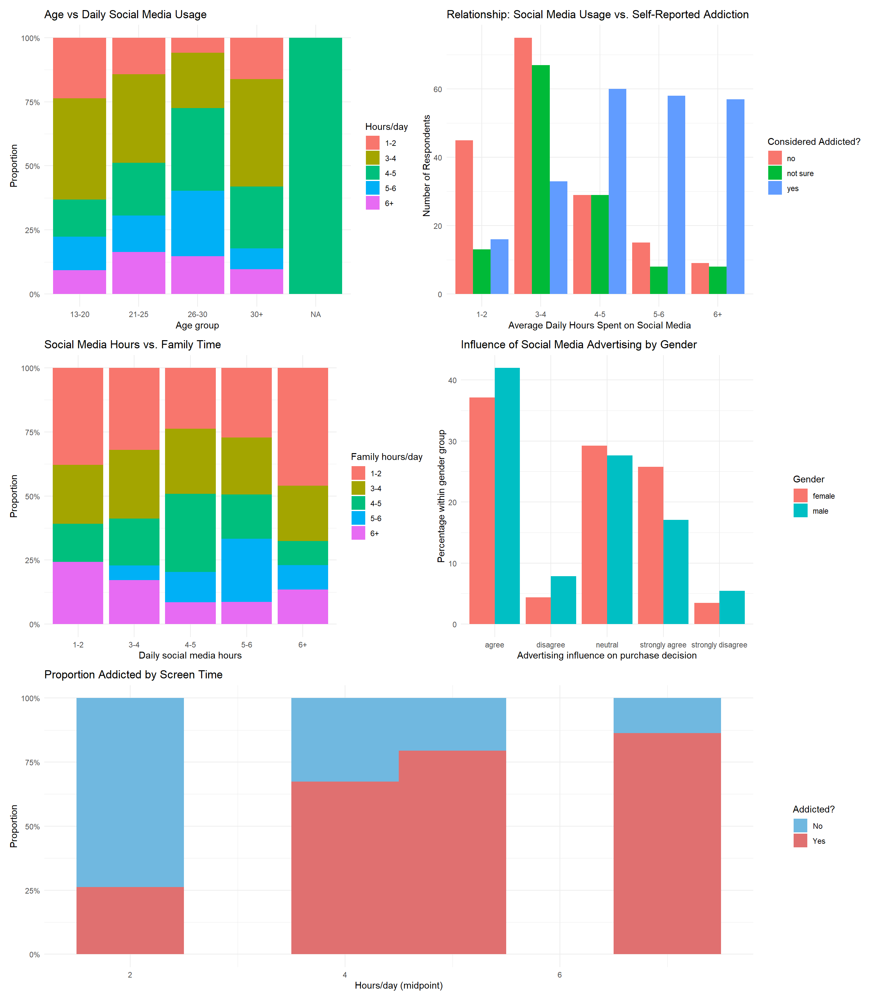

Tiago HAGEN, Marco ANTON, Nizami AZIZOV and Louisa DJEBROUN
Published
July 10, 2026
1 Dataset & research questions
1.1 Reliability of License , strong source
We searched for a more complex dataset so we could analyse the relationships between columns and not only one column to the others.
1.2 3.4
There is no official documentation for the spreadsheet. They provided the data just following the study. The problems with the data have already been stated.
1.3 Source and licence_
The dataset is titled “Social Media Impact on Daily Lives” and can be downloaded here. It was collected via a structured online survey on January 2025.
Licence: CC BY 4.0
1.4 What is in it
The dataset contains 522 rows and 16 columns. Each row represents one survey respondent. The key variables are:
Variable
Rename
Type
Description
Enter your age (Ex: 20)
age
numeric
Respondent’s age in years
What is your gender
gender
categorical
Male / Female
What is your profession?
profession
categorical
Student / Employee
On an average how many hours a day you spend on these sites?
social_hours
ordinal
Daily hours spent on social media
On an average how many hours a day do you spend with your family?
family_hours
ordinal
Daily hours spent with family
Does social media advertising influence the purchase of your product?
ad_influence
ordinal
Whether social media advertising influences purchases
When you use social media did you forget about time?
forget_time
categorical
Whether the user forgets time while on social media
Do you consider yourself addicted to social media?
addicted
categorical
Self-reported addiction: Yes / No / Not sure
1.5 Research questions
1.5.1 Descriptive & Exploratory
Do younger people spend more time on social media?
We aim to describe the distribution of daily social media usage across age groups and report whether a negative or positive association exists between age and screen time in this sample.
1.5.2 Explanatory & Exploratory
Would people with higher screen time consider themselves addicted?
We will examine people who spend more hours on social media are more likely to report feeling addicted.
1.5.3 Explanatory & Confirmatory
Do people with higher social media screen time spend less time with their family?
We will examine whether daily social media usage and daily family time are negatively correlated, controlling informally for profession.
1.5.4 Explanatory & Exploratory
Does the perceived influence of social media advertising on purchasing decisions differ between men and women?
We will compare the distribution of the ad_influence variable across genders and assess whether the difference is substantively meaningful.
1.5.5 Predictive & Exploratory
Can we predict that someone considers themselves addicted to social media?
Using logistic regression, we will model the binary outcome addicted as a function of age, gender, social media hours, and perceived benefits.
1.6 Focus questions:
Can we predict that someone considers themselves addicted to social media? and Do people with higher social media screen time spend less time with their family?
1.7 Context and target audience
This analysis explores how social media usage relates to: - Addiction perception - Family/social life balance - Demographic differences (age, gender) - Consumer behavior (advertising influence)
Target audience: Product managers, Social Media managers, policy makers (political and social)
Interactive Dashboard would be suitable for this audience.
age social_hours_n family_hours_n
Min. :13.00 Min. :1.500 Min. :1.500
1st Qu.:22.00 1st Qu.:4.500 1st Qu.:1.500
Median :24.00 Median :4.500 Median :4.500
Mean :24.66 Mean :4.627 Mean :3.826
3rd Qu.:27.00 3rd Qu.:5.500 3rd Qu.:5.500
Max. :50.00 Max. :7.000 Max. :7.000
NA's :175 NA's :128
Code
bind_rows( df %>%count(Variable ="Gender", Value = gender) %>%rename(Count = n), df %>%count(Variable ="Profession", Value = profession) %>%rename(Count = n), df %>%count(Variable ="Addicted", Value = addicted) %>%rename(Count = n), df %>%count(Variable ="Forget time", Value = forget_time) %>%rename(Count = n)) %>%drop_na(Value) %>%kable()
Table 1: Response counts for key categorical variables
# A tibble: 1 × 2
Variable Missing
<chr> <int>
1 Enter your name 1
Code
df_raw %>%filter(`What is your profession?`=="male")
# A tibble: 1 × 16
...1 `Enter your name` `Enter your age (Ex: 20)` `What is your gender`
<dbl> <chr> <dbl> <chr>
1 368 Forhad Hossain 27 male
# ℹ 12 more variables: `What is your profession?` <chr>,
# `On an average how many hours a day you spend on your profession?` <chr>,
# `What social networking sites do you use?` <chr>,
# `On an average how many hours a day do you spend on these sites?` <chr>,
# `On an average how many hours a day do you spend with your family?` <chr>,
# `Why do you use these social networking sites?` <chr>,
# `What are personal benefits of using social networking sites?` <chr>, …
Missing values: The name column has 1 missing entry, and 1 row had profession = "male" (a clear data-entry error, recoded to NA). All other key variables are complete (0 missing values). Hour variables are encoded as intervals (e.g. "3-4" hours) rather than continuous values, which limits precision.
2.1 Distribution plot
Code
p1 <- df %>%filter(!is.na(addicted)) %>%mutate(social_hours =factor(social_hours, levels =c("1-2","3-4","4-5","5-6","6+")) ) %>%count(social_hours, addicted) %>%group_by(social_hours) %>%mutate(pct = n /sum(n)) %>%ggplot(aes(x = social_hours, y = pct, fill = addicted)) +geom_col(position ="fill") +scale_y_continuous(labels =percent_format()) +scale_fill_manual(values =c("yes"="#E07070", "no"="#70B8E0", "not sure"="#C0C0C0")) +labs(title ="Addiction by Daily Screen Time",x ="Hours/day on social media",y ="Proportion",fill ="Addicted?" ) +theme_minimal()p2 <- df %>%ggplot(aes(x = age)) +geom_histogram(binwidth =2, fill ="#4C9BE8", colour ="white") +labs(title ="Age Distribution of Respondents", x ="Age (years)", y ="Count") +theme_minimal()p2 + p1
Figure 1: Distribution of daily social media usage and age by self-reported addiction status
Code
p1 <-ggplot(df, aes(x = social_hours,fill = addicted )) +geom_bar(position ="dodge") +theme_minimal() +labs(title ="Relationship: Social Media Usage vs. Self-Reported Addiction",x ="Average Daily Hours Spent on Social Media",y ="Number of Respondents",fill ="Considered Addicted?" )p2 <- df %>%filter(!is.na(social_hours), !is.na(family_hours)) %>%mutate(social_hours =factor(social_hours, levels =c("1-2", "3-4", "4-5", "5-6", "6+")),family_hours =factor(family_hours, levels =c("1-2", "3-4", "4-5", "5-6", "6+")) ) %>%ggplot(aes(x = social_hours, fill = family_hours)) +geom_bar(position ="fill") +scale_y_continuous(labels =percent_format()) +labs(title ="Social Media Hours vs. Family Time",x ="Daily social media hours",y ="Proportion",fill ="Family hours/day" ) +theme_minimal()p3 <- df %>%count(gender = gender,advertising_influence = ad_influence ) %>%group_by(gender) %>%mutate(percent = n /sum(n) *100) %>%ggplot(aes(x = advertising_influence,y = percent,fill = gender )) +geom_col(position ="dodge") +labs(title ="Influence of Social Media Advertising by Gender",x ="Advertising influence on purchase decision",y ="Percentage within gender group",fill ="Gender" ) +theme_minimal()p4 <- df %>%mutate(age_group =cut(age, breaks =c(13, 20, 25, 30, 50),labels =c("13-20", "21-25", "26-30", "30+")),social_hours =factor(social_hours, levels =c("1-2", "3-4", "4-5", "5-6", "6+")) ) %>%ggplot(aes(x = age_group, fill = social_hours)) +geom_bar(position ="fill") +scale_y_continuous(labels =percent_format()) +labs(title ="Age vs Daily Social Media Usage",x ="Age group",y ="Proportion",fill ="Hours/day" ) +theme_minimal()p5 <- df %>%filter(!is.na(addicted_bin)) %>%ggplot(aes(x = social_hours_n, fill =factor(addicted_bin))) +geom_histogram(position ="fill", binwidth =1) +scale_y_continuous(labels =percent_format()) +scale_fill_manual(values =c("0"="#70B8E0", "1"="#E07070"),labels =c("0"="No", "1"="Yes")) +labs(title ="Proportion Addicted by Screen Time",x ="Hours/day (midpoint)",y ="Proportion",fill ="Addicted?" ) +theme_minimal()(p4 + p1) / (p2 + p3) / p5

2.2 Data quality
Intervals, not continuous values: all time variables (social_hours, family_hours, prof_hours) are in the form of strings (for example, “3-4”).
78% of respondents are students, which limits generalisability to employed populations.
One row has profession = "male" recoded to NA.
The response options are Yes / No / Not sure. The “Not sure” group (n = 125, 24%) is substantial and will be excluded from binary logistic regression, reducing the effective sample.
3 Analysis plan
3.1 First research question
Do younger people spend more time on social media? Variables: age and social_hours
Approach: examine whether younger users spend more time on social media. We will use Exploratory Data Analysis (EDA). Since our variables are largely categorical or ordinal, we will focus on frequency distribution analysis and cross-tabulation. These methods are appropriate because they allow for the identification of patterns and trends in user behavior without requiring complex predictive modeling, which may be over-fitted given the sample size of 522.
Cleaning needed: convert social_hours to numeric, we will map the string-based time intervals (e.g., “1-2”, “6+”) to numeric mid-points (e.g., 1.5, 6.5) to enable basic arithmetic operations.
Risks: age range is 13–50 but highly concentrated at 22–27.
3.2 Second research question
Would people with higher screen time consider themselves addicted?
Variables: social_hours_n, benefits and addicted
Approach: assess whether higher screen time is associated with feeling addicted. Explore whether greater perceived benefits are linked to higher addiction perception. We will use Pearson or Spearman correlation (depending on normality).
Cleaning needed: parse benefits into a count variable. We will normalize the categorical responses to ensure consistent formatting for grouping and aggregation. Separating the used platforms and benefits in individual columns in order for the analysis.
Risks: self-reported bias (screen time and addiction are subjective). The source data was collected via a Google Form without strict validation, leading to potential input errors.
3.3 Third research question
Do people with higher social media screen time spend less time with their family?
Variables: social_hours_n, family_hours_n and profession
Approach: scatter plot. Determine whether increased screen time is associated with reduced family interaction. We will use Pearson or Spearman correlation (depending on normality).
Risks: self-reported bias (screen time and addiction are subjective).
Confounding variables: work/study requirements may affect screen time.
Measurement inconsistency: different interpretations of “family time” or “screen time”.
3.4 Fourth research question
Does the perceived influence of social media advertising on purchasing decisions differ between men and women?
Variables: ad_influence and gender.
Approach: The analysis will use Exploratory Data analysis (EDA). Frequency tables and cross-tabulations will be used to examine how the advertising influence variable is distributed across genders. The results will then be visualized using group bar charts showing the percentage of each genders response. A Chi-square test of independence could also be conducted to assess if the differences between genders are statically significant. (Are they large enough to be significant at the 5% level?)
Cleaning transformation: The gender must be standardized, to ensure consistent coding of “Male” and “Female”. The responses also have to be converted into an ordered factor so that categories are displayed from “strongly agree” to “Strongly disagree”.
Risks: The data is self-reported so there is a bias that affects the responses. The number of male and female participants are uneven, which may influence comparisons and other results. There may be other factors like age, profession, time spent on media, etc, that could affect purchasing behavior. Gender alone may not explain the observed differences.
3.5 Fifth research question
Can we predict that someone considers themselves addicted to social media?
Variables: outcome: addicted_bin (1 = Yes, 0 = No, “Not sure” excluded) and predictors: age, gender, social_hours_n, forget_time
Approach: logistic regression. Using logistic regression (if addiction is binary) with predictors: screen time, age, gender, perceived benefits, family time.
Cleaning needed: encode forget_time (Yes / Sometimes / No) and exclude “Not sure” addiction rows. We will explicitly filter out or categorize invalid entries in the What is your profession? column (e.g., the entry “male”) to maintain analytical integrity. We will normalize the categorical responses to ensure consistent formatting for grouping and aggregation.
Risks: self-reported bias (screen time and addiction are subjective).
Confounding variables: since this is observational data, other variables (e.g., age, academic workload, employment pressure) may influence the results, making it difficult to establish direct causality between social media usage and perceived addiction. The dataset is heavily skewed toward students (~78%). This limits the generalizability of findings to other professional groups. The source data was collected via a Google Form without strict validation, leading to potential input errors.
4 Workflow Organization
4.1 Code Style
Style Guide: we will follow the tidyverse style guide, as it is the industry standard for R data projects, ensuring high readability and consistency.
Enforcement:
Linting: we will use the styler package to automatically format code according to the style guide before each commit.
Automation:We will integrate a pre-commit hook that runs the linter, preventing any non-compliant code from entering the repository.
We will use renv to lock package versions, ensuring the project renders identically across machines. The renv.lock file will be committed to the repo, large cache folders will be excluded via .gitignore.
4.3 Git Workflow
Branching Strategy: We will follow a Feature Branch Workflow. The main branch will always contain stable, production-ready code. Every new task (e.g., “Add data cleaning script,” “Create correlation plot”) will be developed on a specific branch (e.g., feature/data-cleaning). Once a feature is complete and passes linting, we will perform a Pull Request to merge it into main. This allows for code review and history tracking.
4.4 gitignore
To keep the repository lightweight and secure, the .gitignore file will exclude the following:
Raw Data: Large or sensitive source files (e.g., Social Media Impact on Daily Lives.csv) should generally be kept out of version control if they are large or private, or managed via Data Version Control (DVC) if they change frequently.
Environment Files: Any .env files containing API keys, database credentials, or secret configuration variables (to prevent hardcoding sensitive information).
Rendered Outputs: Temporary files, plots, or HTML reports generated by the analysis (e.g., .html, .pdf, .png).
Project Cache: Local folder structures like .Rproj.user/ or the .Rhistory file.
4.5 Write and sanity-check a model specification
4.6 Question
Can we predict that someone considers themselves addicted to social media?
4.6.1 Model Specification
Response Variable:addicted_bin (Binary: 1 = Yes, 0 = No). Note: “Not sure” responses are treated as NA and excluded from this binary model.
Predictor(s):social_hours_n (Numeric), age (Numeric), gender (Categorical), and forget_time (Categorical).
Method: Multiple Logistic Regression.
Expected Output: We expect higher values in social_hours_n and a “Yes” in forget_time to be positively correlated with the probability of considering oneself addicted (Log-Odds > 0).
Interpretation: The coefficients will show us how strongly each predictor influences the likelihood of perceived addiction, holding all other variables constant.
4.6.2 Sanity Check (Data Validation)
Code
# 1. Do the variables exist, with the right type?glimpse(df)
---title: "Group Project Advanced Statistical Programming using R"author: "Tiago HAGEN, Marco ANTON, Nizami AZIZOV and Louisa DJEBROUN"date: todayformat: html: toc: true toc-depth: 3 code-fold: true code-tools: true number-sections: true theme: cosmoexecute: warning: false message: falseeditor: markdown: wrap: 72---```{r setup}#| include: falselibrary(tidyverse)library(scales)library(knitr)library(patchwork)``````{r load-data}#| include: falsedf_raw <-read_csv("Data/Social_Media_Impact_on_Daily_Lives.csv")# Rename columns to shortdf <- df_raw %>%rename(idx =`...1`,name =`Enter your name`,age =`Enter your age (Ex: 20)`,gender =`What is your gender`,profession =`What is your profession?`,prof_hours =`On an average how many hours a day you spend on your profession?`,platforms =`What social networking sites do you use?`,social_hours =`On an average how many hours a day do you spend on these sites?`,family_hours =`On an average how many hours a day do you spend with your family?`,why_use =`Why do you use these social networking sites?`,benefits =`What are personal benefits of using social networking sites?`,when_access =`When do you access social media websites?`,privacy_effect =`Do you think privacy policies are effective in social networking sites?`,ad_influence =`Does social media advertising influence the purchase of your product?`,forget_time =`When you use social media did you forget about time?`,addicted =`Do you consider yourself addicted to social media?` ) %>%# Fix the one row where profession = "male" mutate(profession =if_else(profession =="male", NA_character_, profession))# convert to numeric midpoints for regressionhour_midpoint <-function(x) {case_when( x =="0-2"~1, x =="1-2"~1.5, x =="2-4"~3, x =="4-5"~4.5, x =="4-6"~5, x =="5-6"~5.5, x =="6-8"~7, x =="6+"~7, x =="8+"~9,TRUE~NA_real_ )}df <- df %>%mutate(social_hours_n =hour_midpoint(social_hours),family_hours_n =hour_midpoint(family_hours),addicted_bin =case_when( addicted =="yes"~1, addicted =="no"~0, addicted =="not sure"~NA_integer_ ) )```# Dataset & research questions## Reliability of License , strong sourceWe searched for a more complex dataset so we could analyse the relationships between columns and not only one column to the others.## 3.4 There is no official documentation for the spreadsheet. They provided the data just following the study. The problems with the data have already been stated.## Source and licence_The dataset is titled "Social Media Impact on Daily Lives" and can bedownloaded[here](https://data.mendeley.com/datasets/9s2nmbxkrs/2/files/6647758b-2eca-4158-a49e-a82611be62f0).It was collected via a structured online survey on January 2025.Licence: CC BY 4.0## What is in itThe dataset contains `r nrow(df)` rows and `r ncol(df_raw)` columns.Each row represents one survey respondent. The key variables are:| Variable | Rename | Type | Description ||------------------|------------------|------------------|------------------||`Enter your age (Ex: 20)`| age | numeric | Respondent's age in years ||`What is your gender`| gender | categorical | Male / Female ||`What is your profession?`| profession | categorical | Student / Employee ||`On an average how many hours a day you spend on these sites?`| social_hours | ordinal | Daily hours spent on social media ||`On an average how many hours a day do you spend with your family?`| family_hours | ordinal | Daily hours spent with family ||`Does social media advertising influence the purchase of your product?`| ad_influence | ordinal | Whether social media advertising influences purchases ||`When you use social media did you forget about time?`| forget_time | categorical | Whether the user forgets time while on social media ||`Do you consider yourself addicted to social media?`| addicted | categorical | Self-reported addiction: Yes / No / Not sure |## Research questions### Descriptive & Exploratory**Do younger people spend more time on social media?**\We aim to describe the distribution of daily social media usage acrossage groups and report whether a negative or positive association existsbetween age and screen time in this sample.### Explanatory & Exploratory**Would people with higher screen time consider themselves addicted?**\We will examine people who spend more hours on social media are morelikely to report feeling addicted.### Explanatory & Confirmatory**Do people with higher social media screen time spend less time with their family?**\We will examine whether daily social media usage and daily family timeare negatively correlated, controlling informally for profession.### Explanatory & Exploratory**Does the perceived influence of social media advertising on purchasing decisions differ between men and women?**\We will compare the distribution of the `ad_influence` variable acrossgenders and assess whether the difference is substantively meaningful.### Predictive & Exploratory**Can we predict that someone considers themselves addicted to social media?**\Using logistic regression, we will model the binary outcome `addicted`as a function of age, gender, social media hours, and perceivedbenefits.## Focus questions:**Can we predict that someone considers themselves addicted to social media?**\ and **Do people with higher social media screen time spend less time with their family?**\## Context and target audienceThis analysis explores how social media usage relates to: - Addiction perception - Family/social life balance - Demographic differences (age, gender) - Consumer behavior (advertising influence)Target audience: Product managers, Social Media managers, policy makers (political and social) \Interactive Dashboard would be suitable for this audience.# Initial data analysis```{r glimpse}glimpse(df)``````{r summary-stats}df %>%select(age, social_hours_n, family_hours_n) %>%summary()``````{r categorical-counts}#| label: tbl-counts#| tbl-cap: "Response counts for key categorical variables"bind_rows( df %>%count(Variable ="Gender", Value = gender) %>%rename(Count = n), df %>%count(Variable ="Profession", Value = profession) %>%rename(Count = n), df %>%count(Variable ="Addicted", Value = addicted) %>%rename(Count = n), df %>%count(Variable ="Forget time", Value = forget_time) %>%rename(Count = n)) %>%drop_na(Value) %>%kable()``````{r}df_raw %>%summarise(across(everything(), ~sum(is.na(.)))) %>%pivot_longer(everything(), names_to ="Variable", values_to ="Missing") %>%filter(Missing >0)df_raw %>%filter(`What is your profession?`=="male")```**Missing values:** The `name` column has 1 missing entry, and 1 row had`profession = "male"` (a clear data-entry error, recoded to `NA`). Allother key variables are complete (0 missing values). Hour variables areencoded as intervals (e.g. `"3-4"` hours) rather than continuous values,which limits precision.## Distribution plot```{r fig-distribution}#| label: fig-dist#| fig-cap: "Distribution of daily social media usage and age by self-reported addiction status"#| fig-width: 10#| fig-height: 4p1 <- df %>%filter(!is.na(addicted)) %>%mutate(social_hours =factor(social_hours, levels =c("1-2","3-4","4-5","5-6","6+")) ) %>%count(social_hours, addicted) %>%group_by(social_hours) %>%mutate(pct = n /sum(n)) %>%ggplot(aes(x = social_hours, y = pct, fill = addicted)) +geom_col(position ="fill") +scale_y_continuous(labels =percent_format()) +scale_fill_manual(values =c("yes"="#E07070", "no"="#70B8E0", "not sure"="#C0C0C0")) +labs(title ="Addiction by Daily Screen Time",x ="Hours/day on social media",y ="Proportion",fill ="Addicted?" ) +theme_minimal()p2 <- df %>%ggplot(aes(x = age)) +geom_histogram(binwidth =2, fill ="#4C9BE8", colour ="white") +labs(title ="Age Distribution of Respondents", x ="Age (years)", y ="Count") +theme_minimal()p2 + p1``````{r}#| fig-width: 14#| fig-height: 16p1 <-ggplot(df, aes(x = social_hours,fill = addicted )) +geom_bar(position ="dodge") +theme_minimal() +labs(title ="Relationship: Social Media Usage vs. Self-Reported Addiction",x ="Average Daily Hours Spent on Social Media",y ="Number of Respondents",fill ="Considered Addicted?" )p2 <- df %>%filter(!is.na(social_hours), !is.na(family_hours)) %>%mutate(social_hours =factor(social_hours, levels =c("1-2", "3-4", "4-5", "5-6", "6+")),family_hours =factor(family_hours, levels =c("1-2", "3-4", "4-5", "5-6", "6+")) ) %>%ggplot(aes(x = social_hours, fill = family_hours)) +geom_bar(position ="fill") +scale_y_continuous(labels =percent_format()) +labs(title ="Social Media Hours vs. Family Time",x ="Daily social media hours",y ="Proportion",fill ="Family hours/day" ) +theme_minimal()p3 <- df %>%count(gender = gender,advertising_influence = ad_influence ) %>%group_by(gender) %>%mutate(percent = n /sum(n) *100) %>%ggplot(aes(x = advertising_influence,y = percent,fill = gender )) +geom_col(position ="dodge") +labs(title ="Influence of Social Media Advertising by Gender",x ="Advertising influence on purchase decision",y ="Percentage within gender group",fill ="Gender" ) +theme_minimal()p4 <- df %>%mutate(age_group =cut(age, breaks =c(13, 20, 25, 30, 50),labels =c("13-20", "21-25", "26-30", "30+")),social_hours =factor(social_hours, levels =c("1-2", "3-4", "4-5", "5-6", "6+")) ) %>%ggplot(aes(x = age_group, fill = social_hours)) +geom_bar(position ="fill") +scale_y_continuous(labels =percent_format()) +labs(title ="Age vs Daily Social Media Usage",x ="Age group",y ="Proportion",fill ="Hours/day" ) +theme_minimal()p5 <- df %>%filter(!is.na(addicted_bin)) %>%ggplot(aes(x = social_hours_n, fill =factor(addicted_bin))) +geom_histogram(position ="fill", binwidth =1) +scale_y_continuous(labels =percent_format()) +scale_fill_manual(values =c("0"="#70B8E0", "1"="#E07070"),labels =c("0"="No", "1"="Yes")) +labs(title ="Proportion Addicted by Screen Time",x ="Hours/day (midpoint)",y ="Proportion",fill ="Addicted?" ) +theme_minimal()(p4 + p1) / (p2 + p3) / p5```## Data quality- Intervals, not continuous values: all time variables (`social_hours`,`family_hours`, `prof_hours`) are in the form of strings (for example,`“3-4”`).- 78% of respondents are students, which limits generalisability to employed populations.- One row has `profession = "male"` recoded to `NA`.- The response options are Yes / No / Not sure. The "Not sure" group (`n = 125`, 24%) is substantial and will be excluded from binary logistic regression, reducing the effective sample.# Analysis plan## First research question*Do younger people spend more time on social media?* Variables: `age`and `social_hours`Approach: examine whether younger users spend more time on social media.We will use Exploratory Data Analysis (EDA). Since our variables arelargely categorical or ordinal, we will focus on frequency distributionanalysis and cross-tabulation. These methods are appropriate becausethey allow for the identification of patterns and trends in userbehavior without requiring complex predictive modeling, which may beover-fitted given the sample size of 522.\Cleaning needed: convert `social_hours` to numeric, we will map thestring-based time intervals (e.g., "1-2", "6+") to numeric mid-points(e.g., 1.5, 6.5) to enable basic arithmetic operations.Risks: age range is 13–50 but highly concentrated at 22–27.## Second research question*Would people with higher screen time consider themselves addicted?*Variables: `social_hours_n`, `benefits` and `addicted`Approach: assess whether higher screen time is associated with feelingaddicted. Explore whether greater perceived benefits are linked tohigher addiction perception. We will use Pearson or Spearman correlation(depending on normality).Cleaning needed: parse `benefits` into a count variable. We willnormalize the categorical responses to ensure consistent formatting forgrouping and aggregation. Separating the used platforms and benefits inindividual columns in order for the analysis.Risks: self-reported bias (screen time and addiction are subjective).The source data was collected via a Google Form without strictvalidation, leading to potential input errors. ## Third research question*Do people with higher social media screen time spend less time with their family?*Variables: `social_hours_n`, `family_hours_n` and `profession`Approach: scatter plot. Determine whether increased screen time isassociated with reduced family interaction. We will use Pearson orSpearman correlation (depending on normality).Risks: self-reported bias (screen time and addiction are subjective).\Confounding variables: work/study requirements may affect screen time.\Measurement inconsistency: different interpretations of "family time" or"screen time". ## Fourth research question*Does the perceived influence of social media advertising on purchasing decisions differ between men and women?*Variables: `ad_influence` and `gender`.Approach: The analysis will use Exploratory Data analysis (EDA). Frequency tables and cross-tabulations will be used to examine how the advertising influence variable is distributed across genders. The results will then be visualized using group bar charts showing the percentage of each genders response. A Chi-square test of independence could also be conducted to assess if the differences between genders are statically significant. (Are they large enough to be significant at the 5% level?)Cleaning transformation: The gender must be standardized, to ensure consistent coding of “Male” and “Female”.The responses also have to be converted into an ordered factor so that categories are displayed from “strongly agree” to “Strongly disagree”. Risks: The data is self-reported so there is a bias that affects the responses. The number of male and female participants are uneven, which may influence comparisons and other results. There may be other factors like age, profession, time spent on media, etc, that could affect purchasing behavior. Gender alone may not explain the observed differences.## Fifth research question*Can we predict that someone considers themselves addicted to social media?*Variables: outcome: `addicted_bin` (1 = Yes, 0 = No, "Not sure"excluded) and predictors: `age`, `gender`, `social_hours_n`,`forget_time`Approach: logistic regression. Using logistic regression (if addictionis binary) with predictors: screen time, age, gender, perceivedbenefits, family time.Cleaning needed: encode `forget_time` (Yes / Sometimes / No) and exclude"Not sure" `addiction` rows. We will explicitly filter out or categorizeinvalid entries in the What is your profession? column (e.g., the entry"male") to maintain analytical integrity. We will normalize thecategorical responses to ensure consistent formatting for grouping andaggregation.Risks: self-reported bias (screen time and addiction are subjective).\Confounding variables: since this is observational data, other variables(e.g., age, academic workload, employment pressure) may influence theresults, making it difficult to establish direct causality betweensocial media usage and perceived addiction. The dataset is heavilyskewed toward students (\~78%). This limits the generalizability offindings to other professional groups. The source data was collected viaa Google Form without strict validation, leading to potential inputerrors.# Workflow Organization## Code StyleStyle Guide: we will follow the tidyverse style guide, as it is the industry standard for R data projects, ensuring high readability and consistency.Enforcement:Linting: we will use the styler package to automatically format code according to the style guide before each commit.Automation:We will integrate a pre-commit hook that runs the linter, preventing any non-compliant code from entering the repository. ## PackagesCore packages: - `tidyverse` - `scales` - `patchwork` - `knitr` /`kableExtra` - `broom` - `pROC`We will use **`renv`** to lock package versions, ensuring the projectrenders identically across machines. The `renv.lock` file will becommitted to the repo, large cache folders will be excluded via`.gitignore`.## Git WorkflowBranching Strategy: We will follow a Feature Branch Workflow.The main branch will always contain stable, production-ready code.Every new task (e.g., "Add data cleaning script," "Create correlation plot") will be developed on a specific branch (e.g., feature/data-cleaning).Once a feature is complete and passes linting, we will perform a Pull Request to merge it into main. This allows for code review and history tracking.## gitignoreTo keep the repository lightweight and secure, the .gitignore file will exclude the following:Raw Data: Large or sensitive source files (e.g., Social Media Impact on Daily Lives.csv) should generally be kept out of version control if they are large or private, or managed via Data Version Control (DVC) if they change frequently.Environment Files: Any .env files containing API keys, database credentials, or secret configuration variables (to prevent hardcoding sensitive information).Rendered Outputs: Temporary files, plots, or HTML reports generated by the analysis (e.g., .html, .pdf, .png).Project Cache: Local folder structures like .Rproj.user/ or the .Rhistory file.## Write and sanity-check a model specification## Question**Can we predict that someone considers themselves addicted to social media?**\### Model Specification* **Response Variable:** `addicted_bin` (Binary: 1 = Yes, 0 = No). *Note: "Not sure" responses are treated as NA and excluded from this binary model.** **Predictor(s):** `social_hours_n` (Numeric), `age` (Numeric), `gender` (Categorical), and `forget_time` (Categorical).* **Method:** Multiple Logistic Regression.* **Expected Output:** We expect higher values in `social_hours_n` and a "Yes" in `forget_time` to be positively correlated with the probability of considering oneself addicted (Log-Odds > 0).* **Interpretation:** The coefficients will show us how strongly each predictor influences the likelihood of perceived addiction, holding all other variables constant.### Sanity Check (Data Validation)```{r}#| label: sanity-check-addiction-model# 1. Do the variables exist, with the right type?glimpse(df)# 2. Is there enough variation and coverage to estimate what we want?df |>count(addicted_bin) df |>count(gender)df |>count(forget_time)# 3. Missingness check for numeric variablesdf |>summarise(across(where(is.numeric), \(x) sum(is.na(x))))```